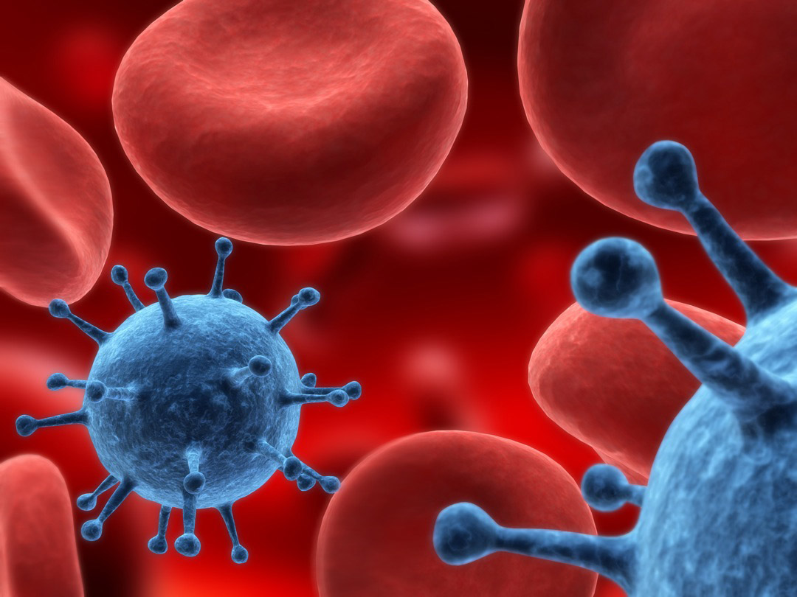
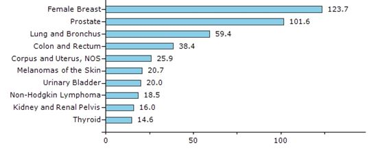
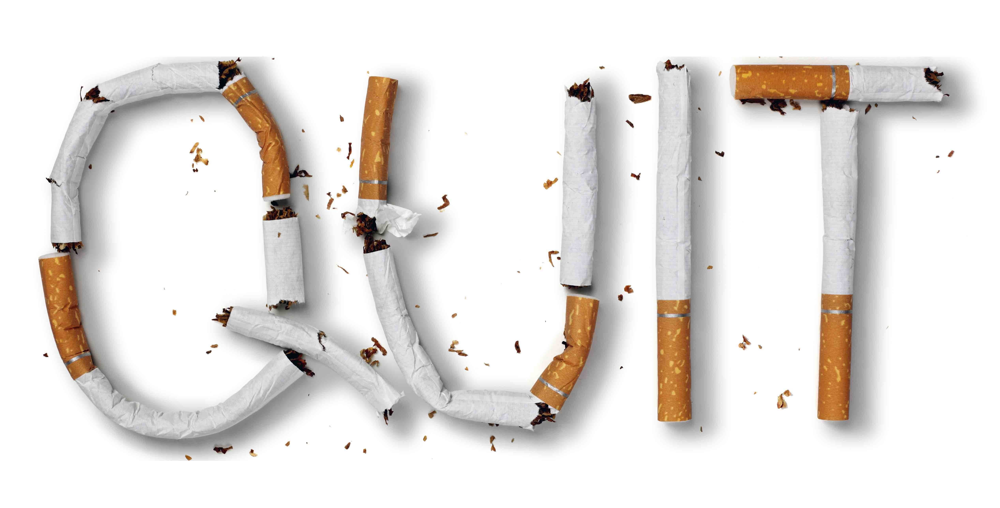
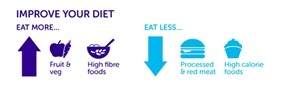

Human body contains approximately 37.2 trillion cells. Normally, human cells grow and divide to form new cells as the body needs them. When cells grow old or become damaged, they die, and new cells take their place. Sometimes, cells mutate (change) and begin to grow and divide more quickly than normal cells. Rather than dying, these abnormal cells clump together to form tumours. If these tumours are cancerous (also called malignant tumours), they can invade and kill healthy tissues. From these tumors, cancer cells can metastasize (spread) and form new tumors in other parts of the body. By contrast, noncancerous tumors (also called benign tumors) do not spread to other parts of the body. Cancer cells can spread to other parts of the body through the blood and lymph systems. Cancer can start almost anywhere in the human body. There are many different types of cancer, but all cancers begin with abnormal cells growing out of control. The most common cancers in adults are skin cancer, lung cancer, colon cancer, rectal cancer, breast cancer, endometrial cancer, ovarian cancer and prostate cancer.

Cancer statistics:
-
Cancer is among the leading causes of death worldwide. In 2012, there were 14 million new cases and 8.2 million cancer-related deaths worldwide.
- The number of new cancer cases will rise to 22 million within the next two decades.
-
More than 60% of the world’s new cancer cases in Africa, Asia, central and south America; 70 % of the world’s cancer deaths occur in these regions.
Cancer is a leading cause of death worldwide, accounting for 8.8 million deaths in 2015. The most common causes of cancer death are cancers of:
- Lung (1.69 million deaths)
- Liver (788 000 deaths)
- Colorectal (774 000 deaths)
- Stomach (754 000 deaths)
- Breast (571 000 deaths)
Cancer statistics in United States:
-
In 2016, an estimated 1,685,210 new cases of cancer will be diagnosed in the United States and 595,690 people will die from the disease.
-
The most common cancers in 2016 are projected to be breast cancer, lung and bronchus cancer, prostate cancer, colon and rectum cancer, bladder cancer, melanoma of the skin, non-Hodgkin lymphoma, thyroid cancer, kidney and renal pelvis cancer, leukaemia, endometrial cancer, and pancreatic cancer.
-
The number of new cases of cancer (cancer incidence) is 454.8 per 100,000 men and women per year (based on 2008-2012 cases).
-
The number of cancer deaths (cancer mortality) is 171.2 per 100,000 men and women per year (based on 2008-2012 deaths).
-
In 2014, an estimated 15,780 children and adolescents ages 0 to 19 were diagnosed with cancer and 1,960 died of the disease.
Top 10 Cancer sites: 2013, Male and Female, United States

Rates per 100,000
Cancer statistics in India:
- One woman dies of cervical cancer every 8 minutes in India.
- For every 2 women newly diagnosed with breast cancer, one woman dies of it in India.
- As many as 2,500 persons die every day due to tobacco-related diseases in India
- Smoking accounts for 1 in 5 deaths among men and 1 in 20 deaths among women, accounting for an estimated 9,30,000 deaths in 2010
- Estimated number of people living with the disease: around 2.5 million
- Cancer-related deaths: 5,56,400
Deaths in the age group between 30-69 years
- Total: 3,95,400 (71% of all cancer related deaths)
- Men: 2,00,100
- Women: 1,95,300
Cancers of oral cavity and lungs in males and cervix and breast in females account for over 50% of all cancer deaths in India.
The top five cancers in men and women account for 47.2% of all cancers; these cancers can be prevented, screened for and/or detected early and treated at an early stage.
Over 17 lakh new cancer cases in India by 2020 – Indian Council of Medical Research (ICMR). India is likely to have over 17.3 lakh new cases of cancer and over 8.8 lakh deaths due to the disease by 2020 with cancers of breast, lung and cervix. Data also revealed that only 12.5 per cent of patients come for treatment in early stages of the disease. Among females, breast cancer topped the list and among males mouth cancer. "Cancer of breast with estimated 1.5 lakh (over 10 per cent of all cancers) new cases during 2016, is the number one cancer overall. Cancer of the lung is the next with estimated 1.14 lakh (83,000 in males and 31,000 in females) new cases during 2016 and 1.4 lakh cases in 2020. "Cancer of the cervix is the third most common cancer with estimated 1 lakh new cases in 2016 and about 1.04 lakh during 2020.
Causes of Cancer:
A carcinogen is something (chemical, radiation, etc) which can damage a cell and make it more likely to turn into a cancerous cell. As a general rule, the more the exposure to a carcinogen, the greater the risk.
- physical carcinogens, such as ultraviolet and ionizing radiation;
- chemical carcinogens, such as asbestos, components of tobacco smoke, aflatoxin (a food contaminant), and arsenic (a drinking water contaminant); and
- biological carcinogens, such as infections from certain viruses, bacteria, or parasites Tobacco use, alcohol use, unhealthy diet, and physical inactivity are major cancer risk factors worldwide
Common environmental factors that contribute to cancer death include tobacco (according to one estimate, accounting for 25–30% of deaths), obesity (30–35%), infections (15–20%), radiation (both ionizing and non-ionizing, up to 10%), lack of physical activity, and environmental pollutants.

Over 30% of cancers are potentially avoidable by reducing key risk factors, of which much the significant is tobacco use, which is the cause of about 22% of cancer deaths. Another 10% is due to obesity, a poor diet, lack of physical activity, and drinking alcohol. In the developing world nearly 20% of cancers are due to infections such as hepatitis B, hepatitis C, and human papillomavirus. These factors act, at least partly, by changing the genes of a cell. Typically many such genetic changes are required before cancer develops. Approximately 5–10% of cancers are due to genetic defects inherited from a person's parents.
Smoking is thought to cause about 1 in 4 of all cancers. About 1 in 10 smokers die from lung cancer.
Prevention:
A person’s cancer risk can be reduced with healthy choices like avoiding tobacco, limiting alcohol use, protecting your skin from the sun and avoiding indoor tanning, eating a diet rich in fruits and vegetables, keeping a healthy weight, and being physically active.
Between 30–50% of cancers can currently be prevented. This can be accomplished by avoiding risk factors and implementing existing evidence-based prevention strategies. The cancer burden can also be reduced through early detection of cancer and management of patients who develop cancer. Many cancers have a high chance of cure if diagnosed early and treated adequately.
Modifying or avoiding key risk factors can significantly reduce the burden of cancer. These risk factors include:
-
Tobacco use including cigarettes and smokeless tobacco
- Being overweight or obese
- Unhealthy diet with low fruit and vegetable intake
- Lack of physical activity
- Alcohol use
- Sexually transmitted HPV-infection
- Infection by hepatitis or other carcinogenic infections
- Ionizing and non-ionizing radiation
- Urban air pollution
- Indoor smoke from household use of solid fuels.
Tobacco use is the single most important risk factor for cancer and is responsible for approximately 22% of cancer-related deaths globally.
WHO Facts about cancer:
-
Cancer is one of the leading causes of morbidity and mortality worldwide, with approximately 14 million new cases in 2012.
-
The number of new cases is expected to rise by about 70% over the next 2 decades.
-
Cancer is the second leading cause of death globally, and was responsible for 8.8 million deaths in 2015. Globally, nearly 1 in 6 deaths is due to cancer.
-
Approximately 70% of deaths from cancer occur in low- and middle-income countries.
-
Around one third of deaths from cancer are due to the 5 leading behavioral and dietary risks: high body mass index, low fruit and vegetable intake, lack of physical activity, tobacco use, and alcohol use.
-
Tobacco use is the most important risk factor for cancer and is responsible for approximately 22% of cancer deaths.
-
Cancer causing infections, such as hepatitis and human papilloma virus (HPV), are responsible for up to 25% of cancer cases in low- and middle-income countries.
-
Late-stage presentation and inaccessible diagnosis and treatment are common. In 2015, only 35% of low-income countries reported having pathology services generally available in the public sector. More than 90% of high-income countries reported treatment services are available compared to less than 30% of low-income countries.
Treatment
A correct cancer diagnosis is essential for adequate and effective treatment because every cancer type requires a specific treatment regimen that encompasses one or more modalities such as surgery, radiotherapy, and chemotherapy. The primary goal is generally to cure cancer or to considerably prolong life. Improving the patient's quality of life is also an important goal. This can be achieved by supportive or palliative care and psychosocial support.
A healthy balanced diet with plenty of fibre, fruit and vegetables and less red and processed meat and salt can help cut cancer risk.
Eating lots of fruits and vegetables has been linked to lower risk of mouth, throat and lung cancer.

References: